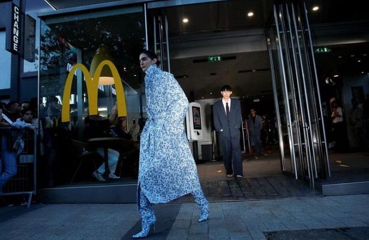
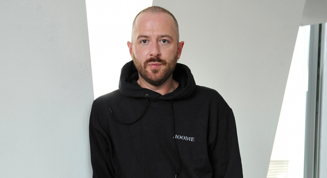

Познакомимся поближе
Название бренда произносится как vet-MAHN (ветмо), на французский манер, Vetements переводится с французского как «одежда». До сих пор никто не знает, кто на самом деле стоит за брендом. Известно, что его главный дизайнер и публичное лицо – Демна, но остальная часть коллектива остается полностью анонимной.
Создатель бренда
Демна Гвасалия
Происхождение
Демна Гвасалия провёл первые 17 лет жизни в Грузии, пережил ряд военных конфликтов в годы распада СССР. Он окончил Тбилисский государственный университет, затем учился в Королевской академии художеств[en] в Антверпене.
История успеха
Демна был ведущим дизайнером Maison Margiela и Louis Vuitton. После работы в Maison Margiela и Louis Vuitton, в 2014 году создал парижский бренд Vetements
В настоящее время является креативным директором Balenciaga.
В 2018 году стал обладателем премии The Fashion Awards.
В 2019 году оказался в центре скандала, выставив на продажу за 680 фунтов в сверхдорогом лондонском магазине Harrods футболку с нецензурной надписью.
Появление бренда
Не так давно, в 2014 году, произошел внезапный взрыв популярности бренда Vetements. Первая коллекция марки была представлена в марте. Гвасалия не хотел брать кредит для развития бизнеса, поэтому у него не было денег на полноценный показ. Лукбук коллекции был снят в парижской квартире дизайнера; фотограф был единственным, кто получил деньги за съемку, со всеми остальными расплатились одеждой. Свою вторую коллекцию, осеннюю, Парижский «коллектив дизайнеров» представил уже на показе с большим количеством покупателей и редакторов модных журналов, сделав ее очень и очень новой. Бренд был создан креативным директором Balenciaga Демной Гвасалией и его братом Гурамом, ставшим CEO бренда.

За пять лет созданный им вместе с братом Гурамом бренд Vetements стал самым ярким явлением моды XXI века. Тогда в 2014 году Демна Гвасалия задал новое направление современной моде, проложив дорожку из андеграунда в мир люкса. Демна Гвасалия лихо преодолел границу между повседневностью и искусством, пацанским стилем и высокой модой. Для него вообще не существует границ – на показе своей последней коллекции для Vetements Демна Гвасалия собрал весь парижский бомонд в «МакДоналдс» и набрал моделей для показа через Instagram, доказав, что современной моде не нужны каноны красоты.
Политика Демны
Ему все равно, что о нем говорят – лишь бы говорили; всех, кто возмущается, посылает на три буквы. Толстовки с нецензурным русским выражением руководители лондонского универмага Harrods изъяли из продажи после того, как заглянули в русский словарь. То есть, сформировали дефицит, показали модникам сладкий запретный плод. Выросший в Советском Союзе Демна Гвасалия знал, что эти методы работают на повышение спроса.

«Раньше мода создавала мечту. Спуститься обратно на землю — вот новый тренд», — считает Гвасалия. Vetements обыгрывает обычные для городского жителя предметы одежды, выпуская джинсы с необработанным краем, худи со слишком длинными рукавами, oversize-пальто и ботильоны с каблуками в виде зажигалок и маркеров. «Мы не разделяем идею, что мода — это гламур и что-то недостижимое», — говорил создатель марки в одном из интервью.
Vetements сейчас
В сентябре 2019 года Демна Гвасалия сообщил об уходе из своего бренда.
Демна Гвасалия: «Я создал Vetements, так как мода казалась мне скучной. Вопреки всем ожиданиям, с появлением Vetements мода поменялась раз и навсегда, и это открыло двери множеству других брендов. У меня появилось чувство, что я выполнил свою миссию новатора в создании концептуального дизайна в этом исключительном бренде, а Vetements стала зрелой компанией, способной трансформировать свое креативное наследие в новую главу».
Гурам Гвасалия: «Мы будем раздвигать границы еще дальше, соблюдая аутентичные коды и ценности марки, и продолжим поддерживать честное творчество и истинный талант. То, что сделал Демна в последние годы, является ключевой главой в истории Vetements. Мы очень благодарны Демне за то, что он внес вклад в стремительное развитие модного дома», – заявил Гурам Гвасалия в официальном пресс-релизе.
После ухода из собственного бренда Гвасалия останется во главе Balenciaga, и новую коллекцию для модного дома дизайнер покажет 29 сентября в Париже. Показа Vetements же в расписании парижской недели не значится, хотя команда дизайнеров продолжит свою работу.
Демна Гвасалия был прав: вместе с коллегами ему действительно удалось изменить облик современной моды и приручить хайпбистов к «ugly fashion». Сейчас же CEO бренда предстоит непростая работа по сохранению команды, так как зачастую за главным дизайнером из бренда уходит и вся команда.